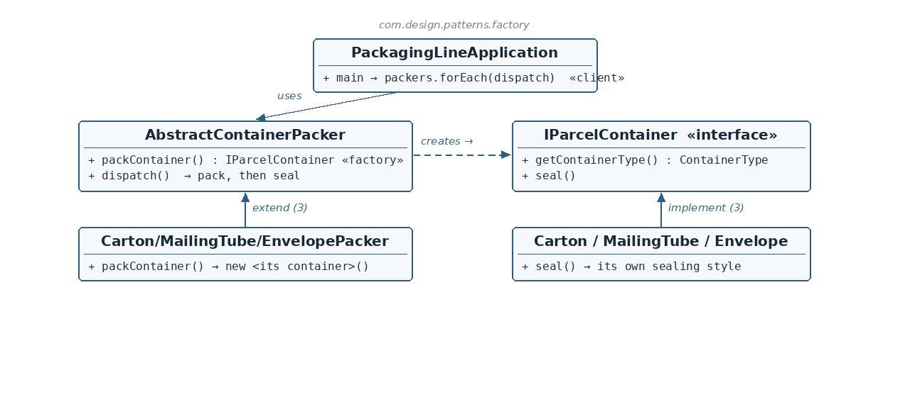

IParcelContainer.java — the product interface
☕ 4 min read · 🎬 Video walkthrough · 📊 UML diagram · 💻 Runnable code
⚡ In a nutshell — Define an interface for creating an object, but let subclasses decide which concrete class to instantiate.
Define an interface for creating an object, but let subclasses decide which concrete class to instantiate. The creator's own algorithm works against the abstract product; a single factory method is the one point each subclass overrides.
The client picks a packer, never a container — it calls new CartonPacker(), but never new Carton().
A packaging line dispatches parcels in different container types — cartons, mailing tubes, envelopes — each sealed its own way (tape, end caps, adhesive flap). The dispatch routine is identical for all: pack a container, then seal it. Only which container gets packed varies — a textbook factory-method variation point.
IParcelContainer is the product interface (seal(), getContainerType()).Carton / MailingTube / Envelope are concrete products, each with its own sealing behavior.AbstractContainerPacker is the abstract creator: the abstract packContainer() is the factory method, and the concrete dispatch() is the shared algorithm that creates a container and then uses it (seal()).CartonPacker / MailingTubePacker / EnvelopePacker are concrete creators — each overrides only packContainer().dispatch() on each.
Reading the diagram: the client touches only the abstract packer. Each concrete packer overrides one factory method; each concrete container implements the product interface. The dashed arrow is the deferred creation.
IParcelContainer — Product interface — seal() + self-describing getContainerType().Carton / MailingTube / Envelope — Concrete products — one sealing style each.AbstractContainerPacker — Abstract creator — factory method packContainer() + shared dispatch() algorithm.CartonPacker / MailingTubePacker / EnvelopePacker — Concrete creators — one product each.PackagingLineApplication — Client — picks packers, never containers.public interface IParcelContainer {
ContainerType getContainerType();
void seal();
}
seal() is the behavior the creator's algorithm ultimately calls. getContainerType() lets each product declare its own identity (CARTON, MAILING_TUBE, ENVELOPE) via the ContainerType enum — the product carries its own key.Carton.java — one concrete product@Component
public class Carton implements IParcelContainer {
@Override public void seal() { System.out.println("Carton sealed with packing tape."); }
@Override public ContainerType getContainerType() { return ContainerType.CARTON; }
}
MailingTube (end caps) and Envelope (adhesive flap) are identical in shape. (The @Component annotation registers it as a Spring bean; the pattern itself doesn't need it.)AbstractContainerPacker.java — the abstract creatorpublic abstract class AbstractContainerPacker {
public abstract IParcelContainer packContainer();
public void dispatch() {
IParcelContainer container = packContainer();
container.seal();
}
}
packContainer() is the factory method — the one deferred decision, returning the abstract product type so this class never names a concrete container.dispatch() is why the pattern matters: the creator is not just a maker of products but a user of them. This shared algorithm — create, then seal — is written once and inherited by every packer. Grow it (weigh → pack → seal → label) and all packers gain the steps for free.CartonPacker.java — one concrete creatorpublic class CartonPacker extends AbstractContainerPacker {
@Override public IParcelContainer packContainer() {
return new Carton();
}
}
Carton is ever constructed. The other two packers differ only in which container they new.PackagingLineApplication.java — the clientList<AbstractContainerPacker> packers = List.of(new CartonPacker(), new MailingTubePacker(), new EnvelopePacker());
packers.forEach(AbstractContainerPacker::dispatch);
dispatch() internally packs its own container and seals it. (The SpringApplication.run line boots the app; the pattern itself is the two lines above.)switch? The variation point is creation itself; Factory Method puts it in the type system. Adding a Crate = Crate + CratePacker, editing nothing — Open/Closed by construction.dispatch() live in the abstract creator? It's the shared algorithm the factory method exists to serve — written once against the abstraction.packContainer() return the interface? So dispatch() and every caller stay coupled only to IParcelContainer — each concrete name appears exactly once, in its packer.Carton sealed with packing tape.
Mailing tube sealed with end caps
Envelope sealed with adhesive flap
(Spring Boot banner/log lines precede this; the module includes spring-boot-starter-web, so an embedded server starts as well.)
Calendar.getInstance(), NumberFormat.getInstance() — the JDK's factory methods.Pick the packer; it packs — and seals — its one container.
👏 Found this useful? Give it a few claps so more developers discover it, and follow for the whole series — every article ships with a UML diagram, runnable code, a narrated video, and a companion PDF. Happy building! 🚀